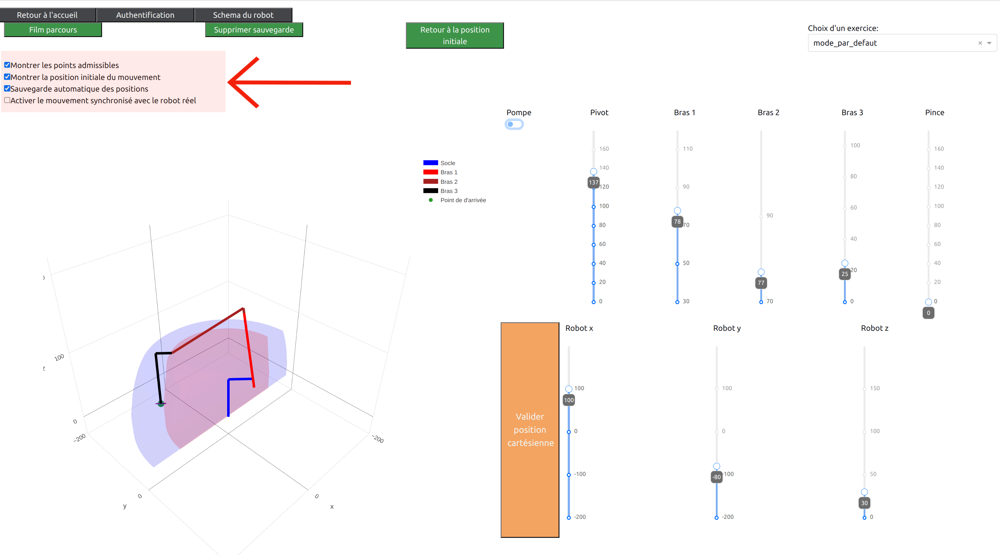
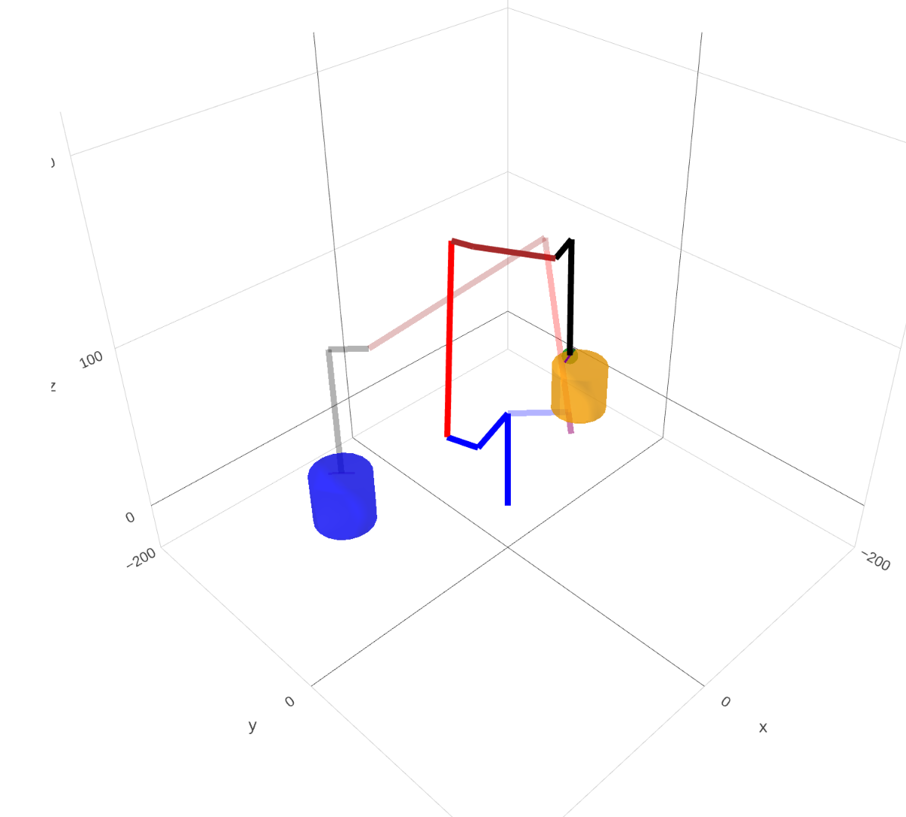

Options d’affichage#
L’utilisateur peut activer ou désactiver certaines options de l’interface virtuelle. Il peut modifier quand il le souhaite ces options en cochant ou décochant les Checkboxes situées dans le coin supérieur gauche de son écran. La zone rouge marquée par une flèche sur la figure ci-dessous montre la position de ces cases à cocher sur l’interface.
{kind=link}
Ci-dessous, nous fournissons une description de chaque option:
Montrer les points admissibles
Cette option permet de visualiser la zone de l’espace dans laquelle il est possible de placer la ventouse du robot en position verticale. Une telle position est appelée position admissible. Cette zone correspond au volume coloré en bleu lorsque l’option est activée.
Pour les deux prochaines options, il est important de préciser que l’interface virtuelle permet de sauvegarder certaines positions du robot afin de pouvoir jouer ce scénario de mouvements prédéfinis à l’aide du bouton Film parcours.
Montrer la position initiale du mouvement
Quand cette option est cochée, l’interface virtuelle permet la visualisation simultanée de:
la position du robot virtuel avec des traits pleinement opaques,
la position initiale du robot pour le scénario de mouvements du robot étant en cours de sauvegarde. Autrement dit, cette position initiale du robot correspond à la première position du robot virtuel sauvegardée. Cette position apparaît à l’écran avec des traits moins opaques. Ainsi, quand l’utilisateur appuye sur le bouton Supprimer sauvegarde, seul le robot virtuel est visible à l’écran car toutes les positions précédemment enregistrées sont oubliées.
La figure suivante présente un exemple de l’affichage de la position initiale d’un scénario.
{kind=link}
Sauvegarde automatique des positions
Quand cette option est activée, tous les déplacements du robot virtuel effectués par l’utilisateur sont automatiquement sauvegardés. Lorsque l’utilisateur aura terminé d’effectuer une séquence de mouvements du robot, appuyer sur le bouton Film parcours permettra de rejouer la totalité de cette séquence.
Quand cette option n’est pas cochée, un bouton Sauvegarde supplémentaire apparaît à l’écran. Il est alors à la charge de l’utilisateur de sauvegarder les positions du robot qu’il souhaite ajouter à son scénario. Activer cette option peut par exemple permettre que le robot interpole directement deux positions qui impliquent une modification de plusieurs angles parmi le pivot, le bras 1, le bras 2, le bras 3 et la pince.
Activer le mouvement synchronisé avec le robot réel
Activer cette option permet de faire en sorte que tous les mouvements du robot virtuel soient totalement identiques à ceux du robot réel connecté. Quand cette option est désactivée, l’utilisateur peut utiliser librement l’interface virtuelle sans que cela déclenche un mouvement du robot réel.
A noter que si l’interface ne détecte pas de robot réel connecté, cette option n’est pas activable pour l’utilisateur.